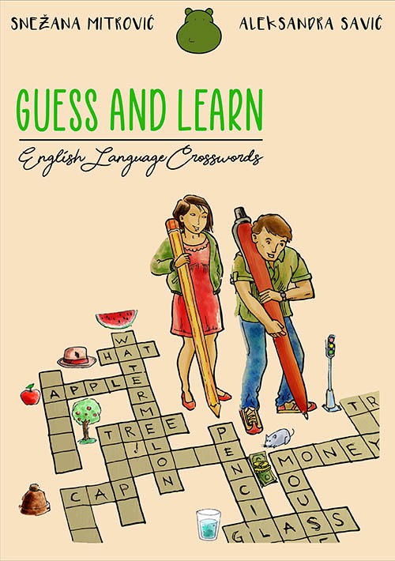
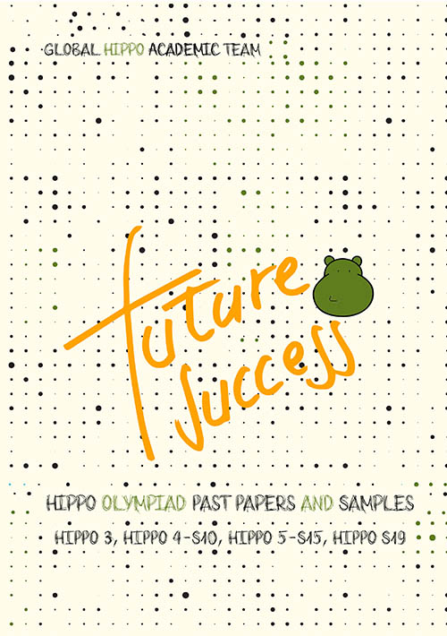

The first edition was held in 2012, with around
5,000 students from 6 countries and 44 finalists.
As the number of participating students grew over the years, in 2016 the semi-final round was introduced. The 2022 edition had
184 finalists from almost 54 different countries
and was held both online and onsite.
HIPPO OLYMPIAD
This unique Olympiad is organised by Global Hippo Association
Global Hippo Association is a non-profit organisation founded in 2012 with the purpose of promoting the importance of English language knowledge and bringing together children from different countries.
Hippo "English Without Borders" Olympiad is an international Olympiad which promotes English language, challenges students around the globe to compete in English language knowledge, and improves the co-operation between teachers.
The Olympiad encourages the development of a shared sense of identity and integration, serves as a role model for young people living together as one community.
The main goal is to create and nourish friendly relations, international understanding and a spirit of sporting competitiveness between young people interested in English language from all around the world.
STORIES Without Borders
- DIRDIPIÙ
- COORDINATOR FOR NORTH ITALY
We liked the idea of an international competition like the Hippo English Language Olympiad right away because it responds exactly to these characteristics: it brings students closer to the study of English by making them participate in an international competition open to all. Internationality is precisely the most important and innovative stimulus because today it is essential to think more openly and allow children, even the youngest, to deal with cultures other than their own.
- ROY LO
- COORDINATOR FOR INDONESIA AND MYANMAR
How can one - in a few short sentences only - fully give credit to the priceless work that is being done at the Hippo English Language Olympiad and the invaluable results that come out of it? Having had the privilege to meet with students and fellow teachers in the Finals in Venice, my admiration for the activities being implemented grows bigger each time, and my respect gets more and more sincere. It has been a delight to work with such committed, open-minded people whose enthusiasm allows them to be swept up by the great competition.
- ARANKA BÁRÓCZ
- COORDINATOR FOR ROMANIA
I can tell you, that nothing compares with the fulfillment when I see the sparkle in the finalists' eyes when they arrive to the Finals in Italy. What a wonderful concept this is, to gather children from all over the workd, in one place, to serve the same purpose of sharing the interest in the English language knowledge, meanwhile travelling, and seeing beautiful places.
- ZORAN LONČARIĆ
- COORDINATOR FOR CROATIA
Hippo was our chance to assess their knowledge and our teaching by an external evaluation. We all were so excited about the competition and hoped that our experience would be positive, and fortunately, it really and truly was. The only thing better than the collection of Hippo staff were students and their teachers.
RESALTS
RESULTS 2023PRACTICE MAKES PERFECT
This materials can be used by both students and teachers as preparation for the Olympiad. There are samples and some past papers as well.
Have fun!
Best books for you:
-
Guess & Learn
Authors: Snezana Mitrovic & Aleksandra Savic
-
Future Success 1
Authors: Global Hippo Academic Team
-
Future Success 2
Authors: Global Hippo Academic Team